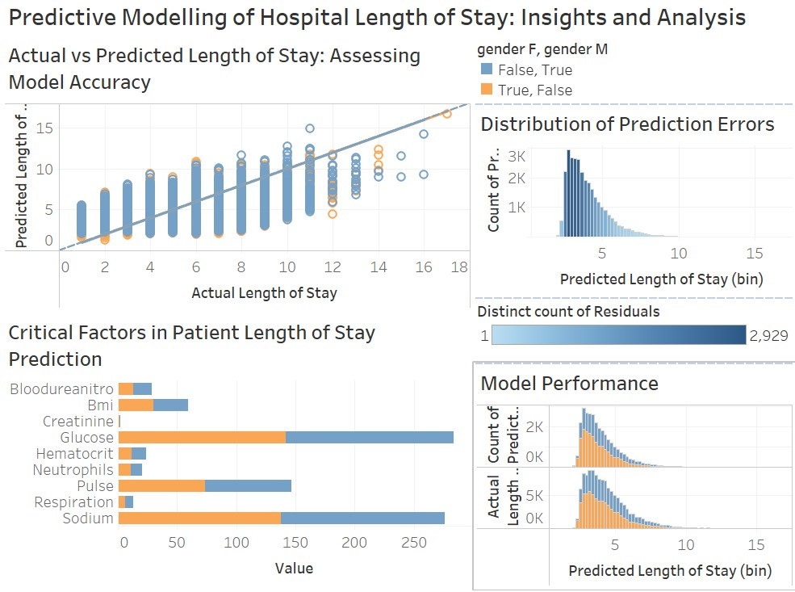
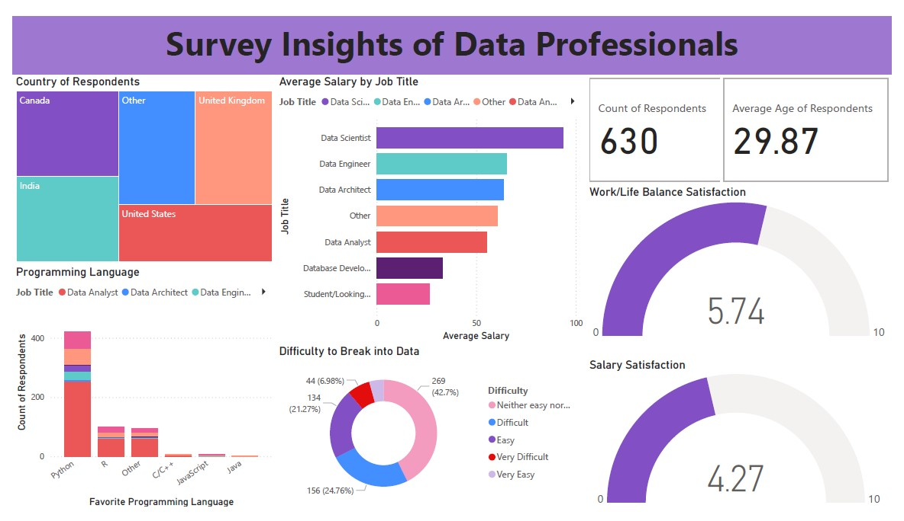

Tolulope Latunde Portfolio
Data Science and Analytics Specialist skilled in SQL, Excel, PowerBI, Tableau, Python, R, Maple, and MATLAB @Tolulope Latunde
Scalable Data Engineering and Integration of the Hospital Length of Stay
In this project, I designed and implemented a scalable data architecture using MySQL and Amazon RDS, featuring a star schema for optimised data storage and retrieval of patient records. I developed automated ETL pipelines to seamlessly integrate simulated patient data into a cloud-based warehouse, reducing manual data handling by 30% and improving model accuracy and analysis speed.
Predicting Hospital Length of Stay using Advanced Analytics and Machine Learning
In this project, I developed and deployed machine learning models such as Random Forest, XGBoost, and Decision Tree to predict hospital length of stay using a dataset of 100,000 patient records, reducing prediction error by 15% through feature engineering and hyperparameter tuning, ultimately enhancing hospital resource management and decision-making.
Advanced Detection of Credit Card Fraud using Machine Learning Techniques
In this project, I developed and deployed multiple machine learning models including Random Forest, XGBoost, Logistic Regression, and Autoencoder to accurately detect fraudulent credit card transactions using a large dataset of 500,000+ records. Despite significant class imbalance, I achieved high precision and recall by using techniques like SMOTE. The project involved building an end-to-end pipeline, covering data preprocessing, feature scaling, anomaly detection, and model evaluation using ROC curves and AUC metrics, optimising the models for real-world performance.
Bank Customer Churn Prediction
In this project, I developed a predictive model using Logistic Regression and compared it with Random Forest on a large dataset of 10,000 bank customers using Scikit-learn, achieving an 81% accuracy in identifying high-risk churners and supporting potential annual revenue retention. I conducted exploratory data analysis (EDA) using Pandas, Seaborn, and Matplotlib to uncover key churn drivers such as tenure, balance, and product engagement, applying feature engineering techniques to enhance model performance. This project highlights my ability to transform complex customer data into actionable insights, helping banks improve retention strategies and focus on high-value customers.
Hospital length of Stay Visualisation
In this project, I developed an interactive Tableau dashboard to visualise hospital Length of Stay (LoS) data, turning complex patient records into clear, actionable insights. The dashboard helps healthcare administrators easily explore trends in admission durations, compare predicted vs. actual stays, and identify factors influencing longer stays. With user-friendly visuals like heatmaps and bar charts, the tool supports better resource planning and patient care, making advanced analytics accessible to non-technical users and driving more effective decision-making in hospital settings.
Data Professional Survey Analysis
This Power BI project analyzes survey data collected from data practitioners. Its primary aim is to provide valuable insights into the skills, tools, benefits, and challenges encountered by professionals in the data field. Through interactive visualizations, users can explore key trends and perspectives, helping to inform better decision-making and understanding within the industry.
Tech Layoffs Data Cleaning in SQL
In this project, we clean housing Tech Layoffs data in SQL Server to ensure that the data used for analysis is accurate and reliable.
Data Exploration in SQL
This project involves data exploration of the Tech Layoffs dataset using SQL Server. The analysis is crucial for informed decision-making, identifying patterns and trends, and uncovering anomalies in the data through visual and statistical insights. This exploration helps to better understand the factors driving tech layoffs and provides a foundation for deeper analysis.
Data Cleaning in Python
This project features Python scripts designed to clean and preprocess raw datasets of customers' contacts, preparing them for advanced analysis. The cleaning process tackles common data issues such as missing values, duplicates, inconsistent formatting, and outliers, ensuring high-quality and reliable datasets. The workflow is implemented using Jupyter Notebooks, making it easy to follow and customize for your specific data needs.
Exploratory Data Analysis of World Population using Python
This project features Python scripts designed to clean and preprocess raw datasets of customers' contacts, preparing them for advanced analysis. The cleaning process tackles common data issues such as missing values, duplicates, inconsistent formatting, and outliers, ensuring high-quality and reliable datasets. The workflow is implemented using Jupyter Notebooks, making it easy to follow and customize for your specific data needs.
Web Scrapping
This project showcases Jupyter notebooks demonstrating web scraping techniques using Python to extract data on the largest companies by revenue from the website. The scraped content is processed and saved in structured formats such as CSV and JSON for further analysis. The scraping utilizes libraries like BeautifulSoup and requests, making it ideal for both static and dynamic web pages. This project provides an efficient, customizable solution for automating data extraction from the web.

Birthday Reminder
This project features a Google Apps Script designed to automatically send staff birthday reminders via email. The script retrieves birthday information from a connected Google Sheets document and sends personalized email notifications to team members or HR on the specified date. It's a seamless solution for ensuring no staff birthday goes unnoticed, with fully customizable email content and automated scheduling.